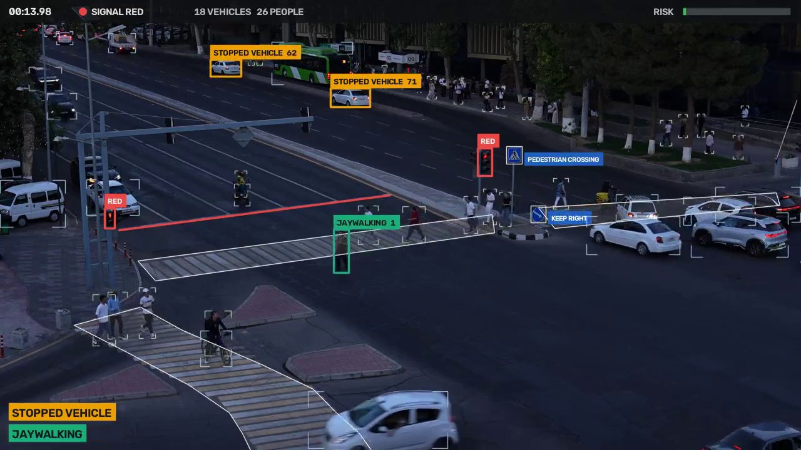

Strong perspective
A car near the camera is several times larger than one across the avenue, so pixels per second mean nothing. Every kinematic threshold is in object sizes per second: √(w·h) of a vehicle box, a person's height.
WIUT Hackathon 2026 · Computer Vision track
One fixed camera over a Tashkent intersection. We turn its video into trajectories, learn the lanes from the traffic itself, and report each violation as a time segment with a class. A separate causal model watches every frame and warns before a collision.

Live demo
The server runs the same pipeline as the submission, on a T4 GPU as in the evaluation. You get the event timeline, the risk curve, and your own video played back with our tracks drawn over it.
Results
Rendered by our own tooling, with the events and the risk curve exactly as
run_submission.py wrote them to predictions_samples.json.
Click an event, or anywhere on a chart, to jump the video there.
python scripts/build_site.py --videos samples/ --pred predictions_samples.json.Everything detected across the sample videos, as a traffic centre would see it.
Exploratory data analysis
Computed from our own tracks of each sample video. Pick a video and every chart follows it.
A car near the camera is several times larger than one across the avenue, so pixels per second mean nothing. Every kinematic threshold is in object sizes per second: √(w·h) of a vehicle box, a person's height.
The first version's road polygon missed the far carriageway and covered a pavement corner, so people waiting at the kerb became a 35 s "jaywalking". The carriageway is now traced on the frame, islands cut out, and combined with where moving vehicles actually drive.
Headings of moving vehicles per grid cell are coherent (the flow-field image), so wrong-way driving becomes a test against the cell's dominant heading, with the vehicle left out of its own vote.
The lit bulb's colour in a fixed region gives the phase after a 1 s majority vote. If red and green are never both seen, the red-light and stop-line rules switch themselves off.
Every red phase parks a queue across all lanes, often beside a lane that still moves. On the organisers' four videos a "stopped vehicle" rule reported every such queue, so the class is off; a car pulling up sharply at the back of a queue is not a crash unless the car in front is shoved. A slow jam counts as congestion only if it lasts through a green phase.
The zones are placed once on a reference frame. Each new video is matched to it on static scenery (buildings, poles, kerbs) and the zones follow any shift, zoom or rotation, to within 2 px in our tests. Footage from another camera is recognised as such: zone rules switch off instead of drawing zebras on bare asphalt.
A courier waiting on a scooter at the light is a "person" to the detector. People on scooters and figures standing still in a traffic lane are traffic, not jaywalkers.
Problem and approach
A detector fine-tuned on this camera and a tracker do the seeing. Everything that decides an event is a short, tested rule over complete trajectories, so every output can be traced back to a reason.
| Stage | How | Kind |
|---|---|---|
| Detection | YOLO11s fine-tuned on this camera (1280 px, 10 fps) on a GPU; YOLOv8n COCO (960 px, 5 fps) without one | learned self-trained from a YOLO11x teacher on the organisers' frames |
| Tracking | ByteTrack per category (vehicles, people, animals), then offline smoothing and ID-switch stitching | algorithm |
| Scene | Traced carriageway, crossings, stop line, signal heads and signs, aligned to each video by feature matching (ORB + RANSAC homography); lane directions learned from each video's moving vehicles | measured no labels |
| Signal | Lit-bulb colour in a fixed region, 1 s majority vote | rule |
| Events (Part A) | One rule per class over complete trajectories; boundaries follow the annotation conventions | rule unit-tested |
| Risk (Part B) | Own causal tracker; closest approach of every pair weighted by the braking needed to avoid it | model hand-calibrated |
| Class | Fires when | Segment |
|---|
Not emitted: stopped_vehicle, near_miss, illegal_turn, solid_line_crossing,
fire_smoke. Under macro-F1 a class we predict but the test set lacks adds a zero to the average,
so we only emit classes whose rule is specific enough to be worth that risk.
weights/west_yolo11s.pt) from Ultralytics YOLO11 weights, with a YOLO11x teacher (not shipped); YOLOv8s/n COCO weights for the CPU profile and as the baseline. All AGPL-3.0.supervision (MIT).scripts/train_detector.py). No public dataset was used for training.Report
A two-stage pipeline. Observe decodes, detects, tracks and reads the signal; it is the expensive, cacheable part. Interpret builds the scene, runs the rules and merges segments in seconds. Part B is a separate causal estimator that never sees a future frame. A time guard thins detection if a video falls behind its share of the 3× budget.
solution.py, and lazy model loading charged the first clip 84 s against a 22 s budget. The detectors now warm up at import.Detector. 223 held-out full frames (the last 20 % of every sample video, never trained on), 1280 px as in the submission, against the YOLO11x teacher's labels.
| Detector | mAP50 | mAP50-95 | Recall | Person AP50 | Truck AP50 |
|---|---|---|---|---|---|
| YOLOv8s, COCO | 0.714 | 0.559 | 0.658 | 0.818 | 0.569 |
| YOLO11s, COCO | 0.738 | 0.594 | 0.628 | 0.819 | 0.577 |
| YOLO11s, fine-tuned (ours) | 0.850 | 0.731 | 0.803 | 0.966 | 0.794 |
Tracker. Buffered IoU (boxes widened for matching) against plain ByteTrack, Part B.
| Tracker | TAD Part B score | Crashes warned (of 51) | Peak risk, calm sample clip | Sample clip events |
|---|---|---|---|---|
| Buffered IoU + re-linking | 0.096 | 6 | 0.91 | a false accident |
| Plain ByteTrack (shipped) | 0.039 | 2 | 0.30 | correct |
Rules. Events on the organisers' four videos (18.4 min) before and after the calibration on contact sheets.
| Class | Before | After | Main cause of the false ones |
|---|---|---|---|
| accident | 27 | 0 | queues, red-light stops, cars leaving the frame |
| failure_to_yield | 216 | 56 | people waiting at the far kerb |
| jaywalking | 52 | 41 | crossing the island between zebras, walking beside the paint, bus passengers |
| illegal_u_turn | 20 | 7 | heading noise while a turning car waits |
| wrong_way | 6 | 3 | turns across one stream, a cyclist on a zebra |
| stopped_vehicle | 6 | off | queues beside a moving lane |
evaluate.py; confirm accident candidates with a small video classifier trained on DoTA/CCD; add a homography to metres so speeds and gaps are physical.Team
Label tool
Open a local video; it never leaves your browser. S marks the start and E
the end of the selected class, Space plays and pauses, ← → step one second.
The export is a ground_truth.json for evaluate.py.